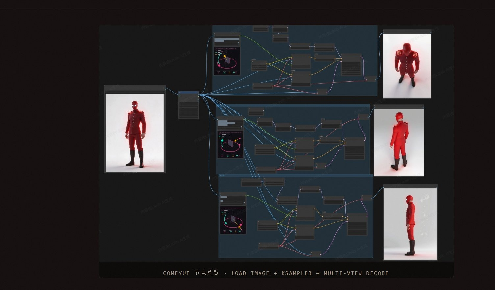
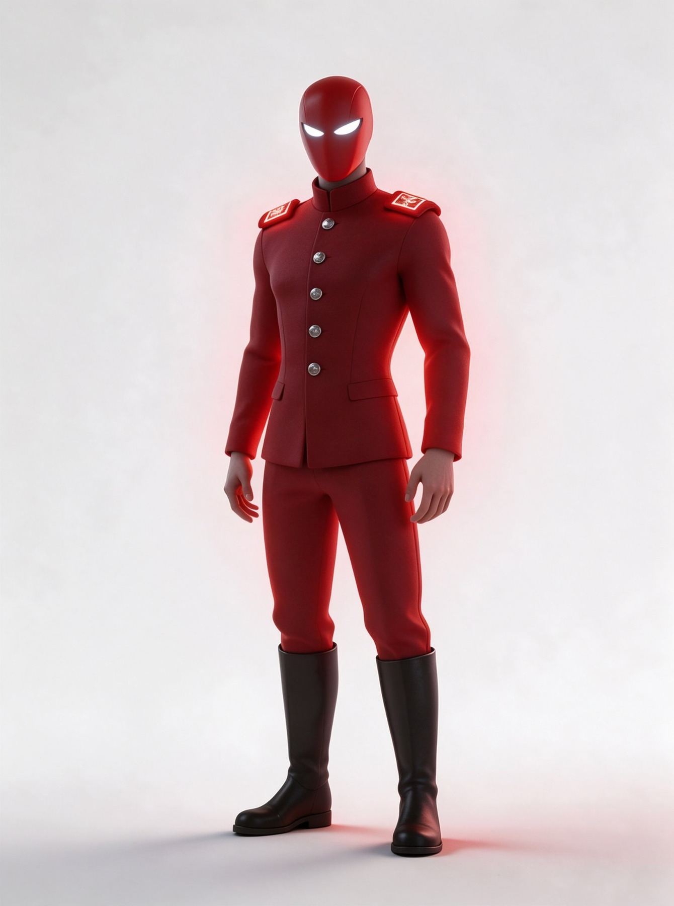
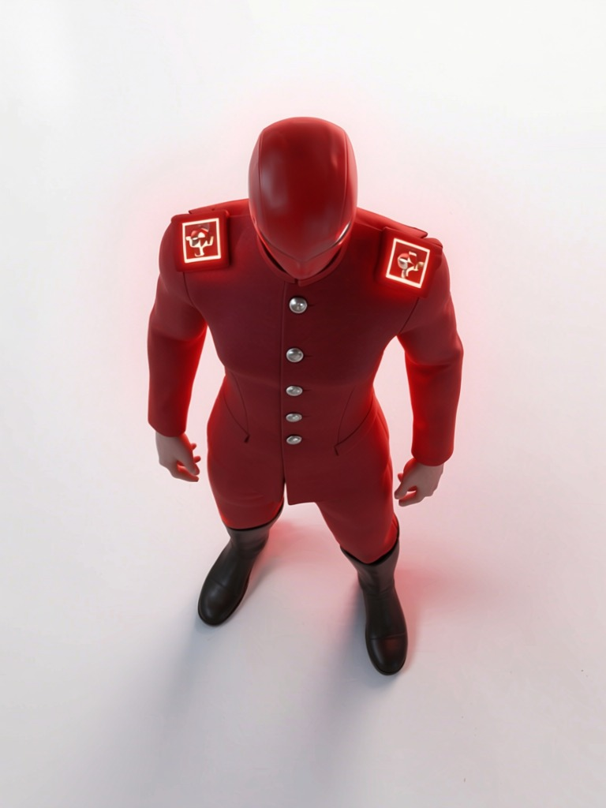
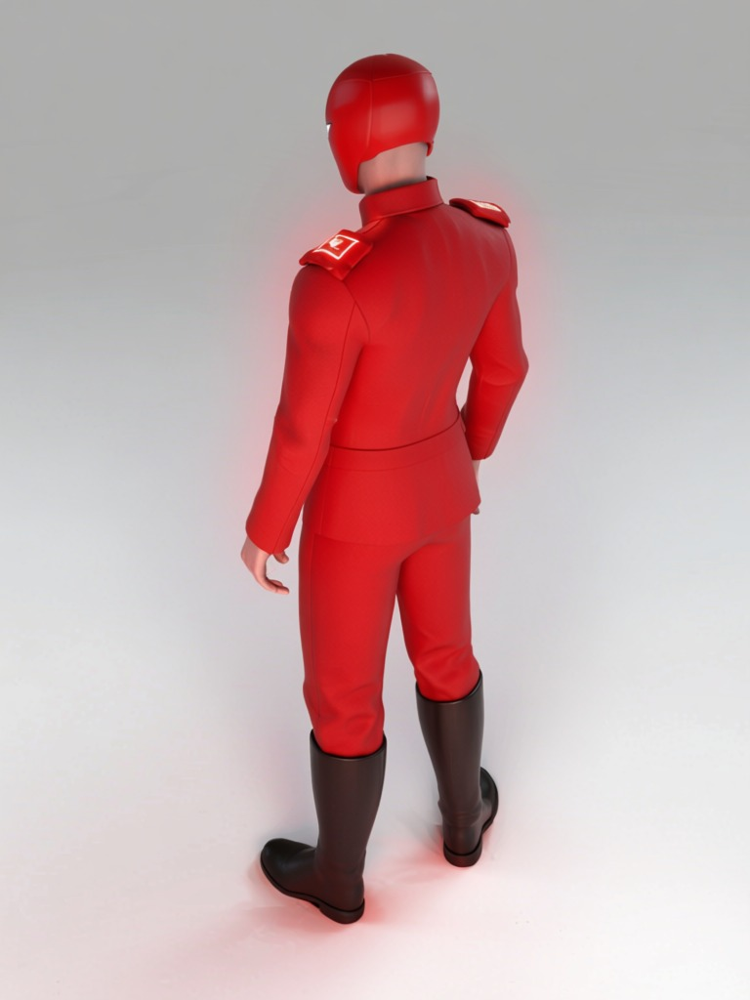
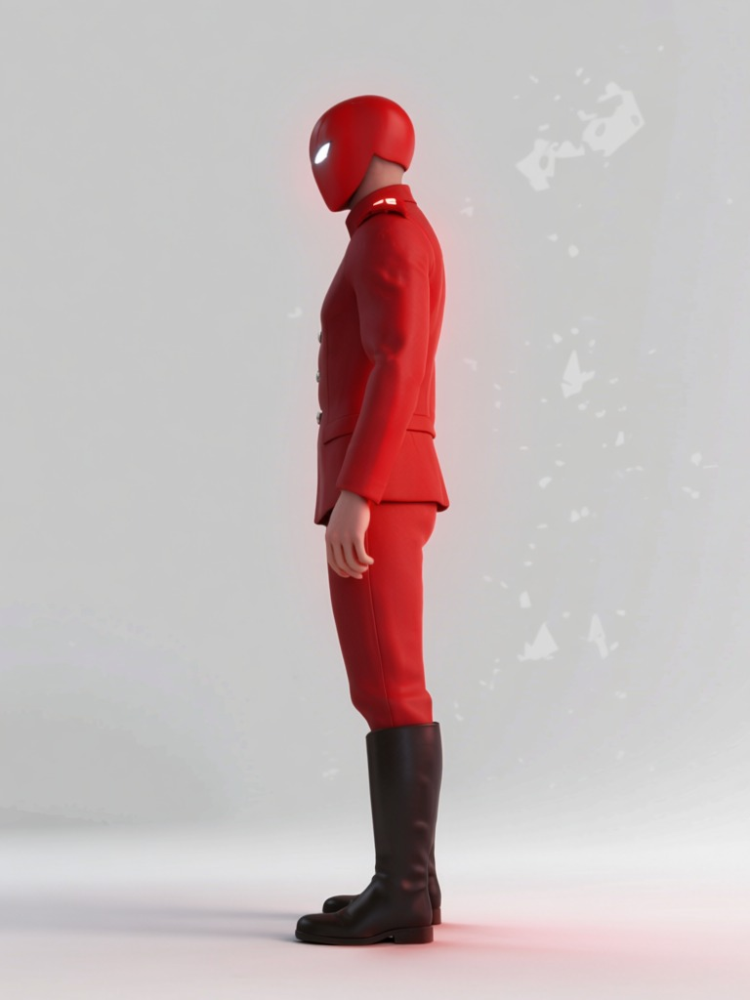

保持角色多视角一致：正面 / 俯视 / 背面 / 侧面，统一脸型、发型、服装、体型与视觉风格。让一个角色能从任何角度进入影视与短剧的多镜头生产。

AI 生成单张图容易，但同一个角色换角度就「变了一个人」——脸型、发型、服装、体型、风格全部漂移。影视与短剧需要角色在连续镜头里稳定，这是单图生成解决不了的。
以角色参考图锁定身份，再用视角控制节点逐向生成，最后做一致性校验：脸型、发型、服装、体型、视觉风格五要素逐项对齐，确保四视图是「同一个人」。
同一角色的四向视图，脸型、发型、服装、体型与风格保持一致，可直接用于角色设定集与后续多镜头生产。



